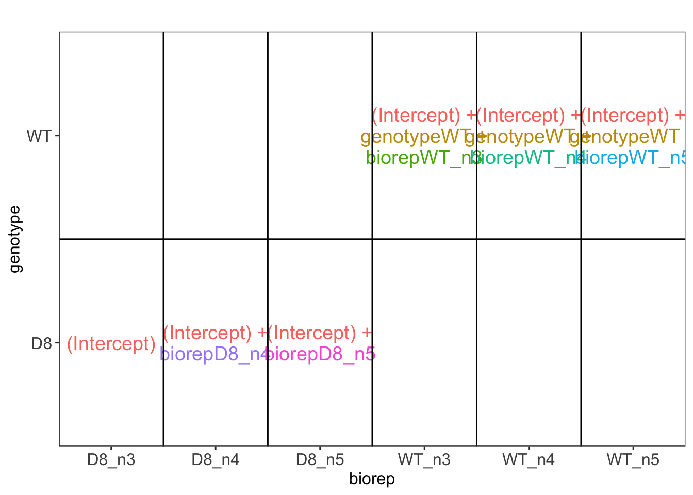

Introduction to proteomics data analysis: robust summarization
Lieven Clement
statOmics, Ghent University (https://statomics.github.io)

This is part of the online course Statistical Genomics Analysis (SGA)
1 Background
A study on the facultative pathogen Francisella tularensis was conceived by Ramond et al. (2015) [12]. F. tularensis enters the cells of its host by phagocytosis. The authors showed that F. tularensis is arginine deficient and imports arginine from the host cell via an arginine transporter, ArgP, in order to efficiently escape from the phagosome and reach the cytosolic compartment, where it can actively multiply. In their study, they compared the proteome of wild type F. tularensis (WT) to ArgP-gene deleted F. tularensis (knock-out, D8). For this exercise, we use a subset of the F. tularensis dataset where bacterial cultures were grown in biological quadruplicate and each biorep was run in technical triplicate on a nanoRSLC-Q Exactive PLUS instrument. The data were searched with MaxQuant version 1.4.1.2. and are available on the PRIDE repository: PXD001584.
2 Data
library(tidyverse)
library(limma)
library(QFeatures)
library(msqrob2)
library(plotly)
peptidesFile <- "https://raw.githubusercontent.com/statOmics/MSqRobSumPaper/master/Francisella/data/maxquant/peptides.txt"
ecols <- grep(
"Intensity\\.",
names(read.delim(peptidesFile))
)
pe <- readQFeatures(
assayData = read.delim(peptidesFile),
quantCols = ecols,
name = "peptideRaw")
colnames(pe)## CharacterList of length 1
## [["peptideRaw"]] Intensity.1WT_20_2h_n3_1 ... Intensity.3D8_20_2h_n5_3The annotation can be derived from the file name.
colData(pe)$genotype <- substr(colnames(pe[[1]]),12,13) %>%
as.factor
colData(pe)$biorep <- paste(
substr(colnames(pe[[1]]),12,13),
substr(colnames(pe[[1]]),21,22),
sep="_") %>% as.factorWe calculate how many non zero intensities we have per peptide and this is often useful for filtering.
Because every biorep is assessed in technical triplicate, we will also calculate the number of biorepeats in which each peptide is observed.
rowData(pe[["peptideRaw"]])$nNonZeroBiorep <- apply(
assay(pe[["peptideRaw"]]),
1,
function(intensity)
colData(pe)$biorep[intensity>0] %>%
unique %>%
length)Peptides with zero intensities are missing peptides and should be
represent with a NA value rather than 0.
2.1 Data exploration
49% of all peptide intensities are missing.
3 Preprocessing
This section preforms preprocessing for the peptide data. This include
- log transformation,
- filtering and
- summarisation of the data.
3.2 Filtering
- Handling overlapping protein groups
In our approach a peptide can map to multiple proteins, as long as there is none of these proteins present in a smaller subgroup.
pe[["peptideLog"]] <-
pe[["peptideLog"]][rowData(pe[["peptideLog"]])$Proteins
%in% smallestUniqueGroups(rowData(pe[["peptideLog"]])$Proteins),]## Warning in replaceAssay(x = x, y = value, i = i): Links between assays were
## lost/removed during replacement. See '?addAssayLink' to restore them manually.- Remove reverse sequences (decoys) and contaminants
We now remove the contaminants and peptides that map to decoy sequences.
pe[["peptideLog"]] <- pe[["peptideLog"]][rowData(pe[["peptideLog"]])$Reverse != "+", ]
pe[["peptideLog"]] <- pe[["peptideLog"]][rowData(pe[["peptideLog"]])$
Contaminant != "+", ]- Drop peptides that were only identified in a single biorepeat
Note, that in experiments without technical repeats we filter on the number of samples in which a peptide is picked up. Here, we will require that a peptide is picked up in at least two biorepeats.
pe[["peptideLog"]] <- pe[["peptideLog"]][rowData(pe[["peptideLog"]])$nNonZeroBiorep >= 2, ]
nrow(pe[["peptideLog"]])## [1] 7542We keep 7542 peptides upon filtering.
3.3 Normalize the data using median centering
We normalize the data by substracting the sample median from every intensity for peptide \(p\) in a sample \(i\):
\[y_{ip}^\text{norm} = y_{ip} - \hat\mu_i\]
with \(\hat\mu_i\) the median intensity over all observed peptides in sample \(i\).
3.4 Explore normalized data
Upon the normalisation the density curves are nicely registered
pe[["peptideNorm"]] %>%
assay %>%
as.data.frame() %>%
gather(sample, intensity) %>%
mutate(biorep = colData(pe)[sample,"biorep"]) %>%
ggplot(aes(x = intensity,group = sample,color = biorep)) +
geom_density()## Warning: Removed 40413 rows containing non-finite outside the scale range
## (`stat_density()`).We can visualize our data using a Multi Dimensional Scaling plot, eg.
as provided by the limma package.
pe[["peptideNorm"]] %>%
assay %>%
limma::plotMDS(col = as.numeric(colData(pe)$genotype),label=colData(pe)$biorep)The first axis in the plot is showing the leading log fold changes (differences on the log scale) between the samples. As expected the samples of the three MS-runs from the same biorepeat cluster together, indicating that biorepeat is a leading source of variability.
3.5 Summarization to protein level
- By default robust summarization is used:
fun = MsCoreUtils::robustSummary()
## Your quantitative and row data contain missing values. Please read the
## relevant section(s) in the aggregateFeatures manual page regarding the
## effects of missing values on data aggregation.## Aggregated: 1/1pe[["protein"]]%>%
assay %>%
limma::plotMDS(col = as.numeric(colData(pe)$genotype),label=colData(pe)$biorep)
Note that the samples upon robust summarisation show a clear separation according to the genotype in the first dimension of the MDS plot and shows again that the samples from the different MS-runs for the same biorepeat cluster together.
4 Data Analysis
## [[1]]
Unlike the mouse example, we cannot correct for biorepeat using a randomized complete block analysis. Indeed, once we condition on biorepeat, we also condition on the genotype. Hence, when infering on the treatment effect we should correct for both the variability both within and between biorepeat.
In the original paper, the authors simply ignored the correlation in the data according to biorepeat and INCORRECTLY act as if each technical repeat was an independent sample. So they act as if they have a 9 by 9 group comparison instead of correctly accounting that they only have three independent biorepeats for each genotype.
We will fit this WRONG model to see how this impacts the data analysis.
## [[1]]
pe <- msqrob(object = pe, i = "protein", formula = ~ genotype,overwrite=TRUE, modelColumnName="wrongModel")Statistical inference: log2FC between WT and D8 is quantified by
genotypeWT.
L <- makeContrast("genotypeWT=0", parameterNames = c("genotypeWT"))
pe <- hypothesisTest(object = pe, i = "protein", contrast = L, overwrite = TRUE, modelColumn = "wrongModel", resultsColumnNamePrefix = "wrongModel-")volcano <- ggplot(rowData(pe[["protein"]])$`wrongModel-genotypeWT`,
aes(x = logFC, y = -log10(pval), color = adjPval < 0.05)) +
geom_point(cex = 2.5) +
scale_color_manual(values = alpha(c("black", "red"), 0.5)) + theme_minimal()
volcanoNote, that 319 proteins are found to be differentially abundant according to the WRONG DATA ANALYSIS that ignores that fact that intensities from technical repeats (MS-runs) from the same biorepeat are correlated.
As the analysis acts as if there are 9 independent repeats for each genotype, we can expect the analysis to be overly liberal. So we can expect many false positive results.
4.1 Correct Data analysis
We model the protein level expression values using
msqrob. By default msqrob2 estimates the model
parameters using robust regression.
We will model the data with a different group mean. The group is
incoded in the variable genotype of the colData. We will
also have to include a random effect for bio-repeat to address the
pseudo-replication in the experiment. Indeed, the data from the same
bio-repeat will be correlated!
We can specify this model by using a formula with the factor
genotype as a fixed effect and as the factor
biorep a random effect:
formula = ~genotype + (1|biorep).
## Warning: 'experiments' dropped; see 'drops()'For this model we can also use the same contrast. Indeed, the model now contains a parameter for the intercept, genotype and a random intercept for each biorepeat.
## (Intercept) genotypeWT (Intercept)biorepD8_n3
## -0.01438052 0.10487683 -0.22937840
## (Intercept)biorepD8_n4 (Intercept)biorepD8_n5 (Intercept)biorepWT_n3
## 0.09661496 0.13276344 -0.14908511
## (Intercept)biorepWT_n4 (Intercept)biorepWT_n5
## -0.05118080 0.20026592volcano <- ggplot(rowData(pe[["protein"]])$`genotypeWT`,
aes(x = logFC, y = -log10(pval), color = adjPval < 0.05)) +
geom_point(cex = 2.5) +
scale_color_manual(values = alpha(c("black", "red"), 0.5)) + theme_minimal()
volcano
Note, that 164 proteins are found to be differentially abundant. Hence, when we address the correlation structure in the data, we can indeed see that the analysis returns way less DA proteins than with the incorrect analysis of the original authors who acted as if all technical replicates where independent repeats.
We indeed see that the mixed model is addressing the correlation structure in the data by . \[ \left\{ \begin{array}{rcl} y_i &=& \beta_o + \beta_{WT} x_{WT,i} + u_1 z_{b1,i} + u_2 z_{b2,i} + u_1 z_{b3,i} + u_4 z_{b4,i} + u_5z_{b5,i} + u_6z_{b6,i} + \epsilon_i\\ u_j &\sim& N(0, \sigma_u^2)\\ \epsilon_i &\sim& N(0,\sigma_\epsilon^2) \end{array} \right., \] with \(u_j\) random effects that model the correlation in the intensities from technical repeats (MS-runs) the originate from the same bio-repeat. These random intercepts are assumed to be i.i.d. normally distributed with mean 0 and variance \(\sigma^2_u\). Hence, \(\sigma^2_u\) models the between biorepeat variability and \(\sigma^2_\epsilon\) the within biorepeat variability.
We can also write the data in matrix form
\[ \mathbf{Y} = \mathbf{X}\boldsymbol{\beta} + \mathbf{Zu} + \boldsymbol{\epsilon} \] with \[\mathbf{Y}=\left[\begin{array}{c} y_1 \\\vdots\\ y_{18}\end{array}\right], \mathbf{X}=\left[\begin{array}{cc}1&x_{WT,1}\\\vdots&\vdots\\1&x_{WT,18}\end{array}\right], \boldsymbol{\beta}=\left[\begin{array}{c} \beta_0 \\ \beta_{WT} \end{array}\right], \mathbf{Z}=\left[\begin{array}{ccc}z_{b1,1}&\ldots&z_{b6,1}\\\vdots&&\vdots\\z_{b1,18}&\ldots&z_{b6,18}\end{array}\right], \mathbf{u}=\left[\begin{array}{c} u_1 \\\vdots\\ u_{6}\end{array}\right]\]
Hence, with the mixed model, the variance covariance matrix of the intensities becomes \[ \begin{array}{rcl} \boldsymbol{\Sigma}_\mathbf{Y} &=& \text{var}\left(\mathbf{Y}\right) \\ &=& \text{var}\left(\mathbf{X}\boldsymbol{\beta} + \mathbf{Zu} + \boldsymbol{\epsilon}\right) \\ &=& \mathbf{Z}\text{var}\left(\mathbf{u}\right)\mathbf{Z}^T + \mathbf{I}\sigma_\epsilon^2\\ &=& \mathbf{Z}\mathbf{Z}^T\sigma^2_u + \mathbf{I}\sigma_\epsilon^2 \end{array} \]
X <- model.matrix(~genotype,colData(pe))
Z <- model.matrix(~-1+biorep,colData(pe))
rownames(Z) <- paste0("b",rep(1:6,each=3),",",rep(1:3,6))
Z%*%t(Z)## b1,1 b1,2 b1,3 b2,1 b2,2 b2,3 b3,1 b3,2 b3,3 b4,1 b4,2 b4,3 b5,1 b5,2 b5,3
## b1,1 1 1 1 0 0 0 0 0 0 0 0 0 0 0 0
## b1,2 1 1 1 0 0 0 0 0 0 0 0 0 0 0 0
## b1,3 1 1 1 0 0 0 0 0 0 0 0 0 0 0 0
## b2,1 0 0 0 1 1 1 0 0 0 0 0 0 0 0 0
## b2,2 0 0 0 1 1 1 0 0 0 0 0 0 0 0 0
## b2,3 0 0 0 1 1 1 0 0 0 0 0 0 0 0 0
## b3,1 0 0 0 0 0 0 1 1 1 0 0 0 0 0 0
## b3,2 0 0 0 0 0 0 1 1 1 0 0 0 0 0 0
## b3,3 0 0 0 0 0 0 1 1 1 0 0 0 0 0 0
## b4,1 0 0 0 0 0 0 0 0 0 1 1 1 0 0 0
## b4,2 0 0 0 0 0 0 0 0 0 1 1 1 0 0 0
## b4,3 0 0 0 0 0 0 0 0 0 1 1 1 0 0 0
## b5,1 0 0 0 0 0 0 0 0 0 0 0 0 1 1 1
## b5,2 0 0 0 0 0 0 0 0 0 0 0 0 1 1 1
## b5,3 0 0 0 0 0 0 0 0 0 0 0 0 1 1 1
## b6,1 0 0 0 0 0 0 0 0 0 0 0 0 0 0 0
## b6,2 0 0 0 0 0 0 0 0 0 0 0 0 0 0 0
## b6,3 0 0 0 0 0 0 0 0 0 0 0 0 0 0 0
## b6,1 b6,2 b6,3
## b1,1 0 0 0
## b1,2 0 0 0
## b1,3 0 0 0
## b2,1 0 0 0
## b2,2 0 0 0
## b2,3 0 0 0
## b3,1 0 0 0
## b3,2 0 0 0
## b3,3 0 0 0
## b4,1 0 0 0
## b4,2 0 0 0
## b4,3 0 0 0
## b5,1 0 0 0
## b5,2 0 0 0
## b5,3 0 0 0
## b6,1 1 1 1
## b6,2 1 1 1
## b6,3 1 1 1So, we see that the correlation of the data from the same biological repeat are correctly addressed and that the data from distinct biorepeats are assumed to be independent. Hence, the variance-covariance matrix of \(\mathbf{Y}\) has a block diagonal structure, with as variance \(\sigma_u^2 + \sigma_\epsilon^2\) and the covariance between intensities from the same biorepeat equals \(\sigma_u^2\).
\[ \boldsymbol{\Sigma}_\mathbf{Y} = \left[\begin{array}{cccccccccc}\sigma^2_u+\sigma^2_\epsilon&\sigma^2_u&\sigma^2_u&0&0&0&\ldots&0&0&0\\ \sigma^2_u&\sigma^2_u+\sigma^2_\epsilon&\sigma^2_u&0&0&0&\ldots&0&0&0\\ \sigma^2_u&\sigma^2_u&\sigma^2_u+\sigma^2_\epsilon&0&0&0&\ldots&0&0&0\\ 0&0&0&\sigma^2_u+\sigma^2_\epsilon&\sigma^2_u&\sigma^2_u&\ldots&0&0&0\\ 0&0&0&\sigma^2_u&\sigma^2_u+\sigma^2_\epsilon&\sigma^2_u&\ldots&0&0&0\\ 0&0&0&\sigma^2_u&\sigma^2_u&\sigma^2_u+\sigma^2_\epsilon&\ldots&0&0&0\\ 0&0&0&0&0&0&\dots&\sigma^2_u+\sigma^2_\epsilon&\sigma^2_u&\sigma^2_u\\ 0&0&0&0&0&0&\dots&\sigma^2_u&\sigma^2_u+\sigma^2_\epsilon&\sigma^2_u\\ 0&0&0&0&0&0&\dots&\sigma^2_u&\sigma^2_u&\sigma^2_u+\sigma^2_\epsilon\\ \end{array}\right] \]
5 Session Info
With respect to reproducibility, it is highly recommended to include a session info in your script so that readers of your output can see your particular setup of R.
## R version 4.4.0 RC (2024-04-16 r86468)
## Platform: aarch64-apple-darwin20
## Running under: macOS 15.6
##
## Matrix products: default
## BLAS: /Library/Frameworks/R.framework/Versions/4.4-arm64/Resources/lib/libRblas.0.dylib
## LAPACK: /Library/Frameworks/R.framework/Versions/4.4-arm64/Resources/lib/libRlapack.dylib; LAPACK version 3.12.0
##
## locale:
## [1] en_US.UTF-8/en_US.UTF-8/en_US.UTF-8/C/en_US.UTF-8/en_US.UTF-8
##
## time zone: Europe/Brussels
## tzcode source: internal
##
## attached base packages:
## [1] stats4 stats graphics grDevices utils datasets methods
## [8] base
##
## other attached packages:
## [1] ExploreModelMatrix_1.16.0 plotly_4.10.4
## [3] msqrob2_1.15.1 QFeatures_1.19.3
## [5] MultiAssayExperiment_1.34.0 SummarizedExperiment_1.34.0
## [7] Biobase_2.64.0 GenomicRanges_1.56.1
## [9] GenomeInfoDb_1.40.1 IRanges_2.38.1
## [11] S4Vectors_0.42.1 BiocGenerics_0.54.0
## [13] generics_0.1.3 MatrixGenerics_1.16.0
## [15] matrixStats_1.4.1 limma_3.60.6
## [17] lubridate_1.9.3 forcats_1.0.0
## [19] stringr_1.5.1 dplyr_1.1.4
## [21] purrr_1.0.2 readr_2.1.5
## [23] tidyr_1.3.1 tibble_3.2.1
## [25] ggplot2_3.5.1 tidyverse_2.0.0
##
## loaded via a namespace (and not attached):
## [1] rlang_1.1.4 magrittr_2.0.3 shinydashboard_0.7.2
## [4] clue_0.3-65 compiler_4.4.0 vctrs_0.6.5
## [7] reshape2_1.4.4 ProtGenerics_1.36.0 pkgconfig_2.0.3
## [10] crayon_1.5.3 fastmap_1.2.0 XVector_0.44.0
## [13] labeling_0.4.3 utf8_1.2.4 promises_1.3.0
## [16] rmarkdown_2.28 tzdb_0.4.0 UCSC.utils_1.0.0
## [19] nloptr_2.1.1 xfun_0.47 zlibbioc_1.50.0
## [22] cachem_1.1.0 jsonlite_1.8.9 later_1.3.2
## [25] highr_0.11 DelayedArray_0.30.1 BiocParallel_1.38.0
## [28] parallel_4.4.0 cluster_2.1.6 R6_2.5.1
## [31] bslib_0.8.0 stringi_1.8.4 boot_1.3-31
## [34] jquerylib_0.1.4 Rcpp_1.0.13-1 knitr_1.48
## [37] BiocBaseUtils_1.10.0 httpuv_1.6.15 Matrix_1.7-0
## [40] splines_4.4.0 igraph_2.0.3 timechange_0.3.0
## [43] tidyselect_1.2.1 rstudioapi_0.16.0 abind_1.4-8
## [46] yaml_2.3.10 codetools_0.2-20 lattice_0.22-6
## [49] plyr_1.8.9 shiny_1.9.1 withr_3.0.1
## [52] evaluate_1.0.0 pillar_1.9.0 DT_0.33
## [55] shinyjs_2.1.0 hms_1.1.3 munsell_0.5.1
## [58] scales_1.3.0 minqa_1.2.8 xtable_1.8-4
## [61] glue_1.8.0 lazyeval_0.2.2 tools_4.4.0
## [64] data.table_1.17.6 lme4_1.1-35.5 cowplot_1.1.3
## [67] grid_4.4.0 MsCoreUtils_1.16.1 colorspace_2.1-1
## [70] nlme_3.1-166 GenomeInfoDbData_1.2.12 cli_3.6.3
## [73] fansi_1.0.6 S4Arrays_1.4.1 viridisLite_0.4.2
## [76] AnnotationFilter_1.28.0 gtable_0.3.5 rintrojs_0.3.4
## [79] sass_0.4.9 digest_0.6.37 SparseArray_1.4.8
## [82] htmlwidgets_1.6.4 farver_2.1.2 htmltools_0.5.8.1
## [85] lifecycle_1.0.4 httr_1.4.7 mime_0.12
## [88] statmod_1.5.0 MASS_7.3-61